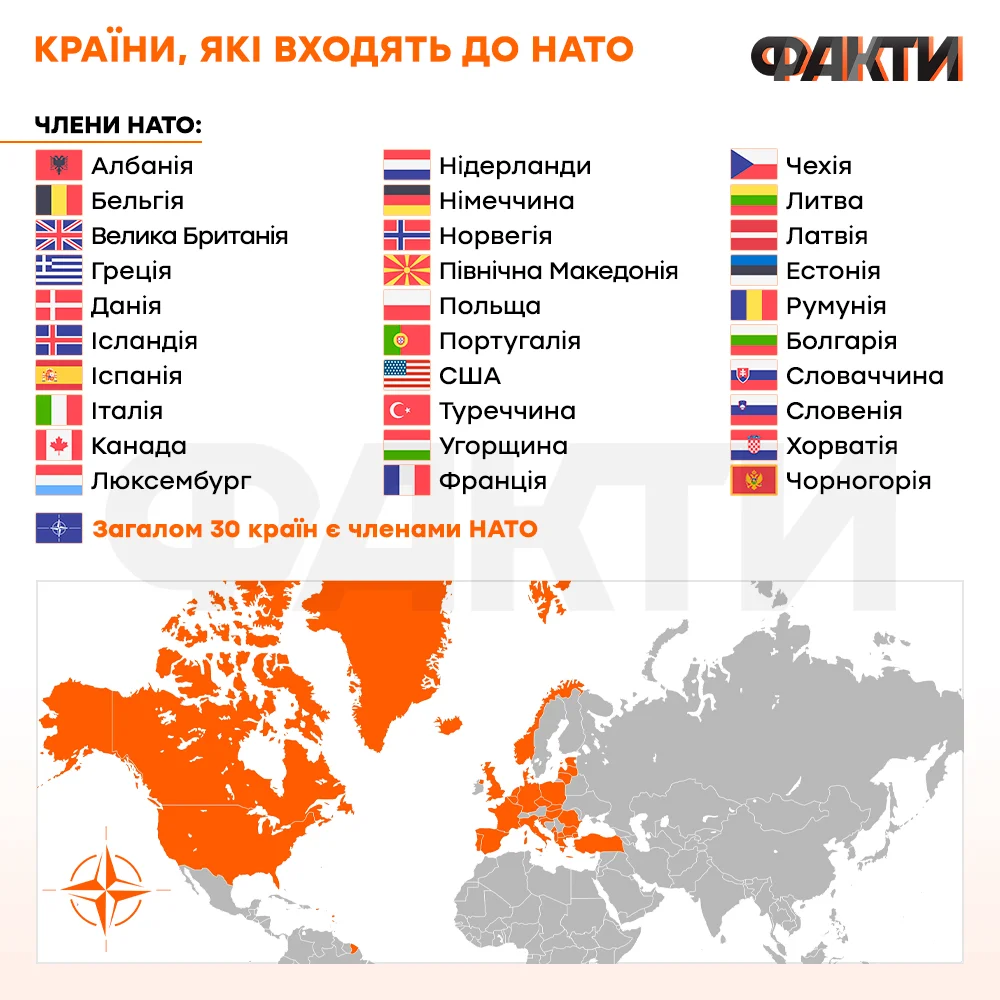

Сьогодні членами НАТО є 29 країн: Албанія, Бельгія, Велика Британія, Греція, Данія,
Ісландія, Іспанія, Італія, Канада, Люксембург, Нідерланди, Німеччина, Норвегія, Польща,
Португалія, Сполучені Штати Америки, Туреччина, Угорщина, Франція, Чехія, Литва, Латвія,
Естонія, Румунія, Болгарія, Словаччина, Словенія, Хорватія ...
Нато це - Організа́ція Північноатланти́чного до́гово́ру, також Північноатланти́чний алья́нс або НАТО (англ. North Atlantic Treaty
Organization — NATO, фр. Organisation du traité de l 'Atlantique nord — OTAN) — міжнародна міжурядова організація, військово-політичний союз 32 держав Північної Америки і Європи, які прагнуть досягти мети Північноатлантичного договору, підписаного у Вашингтоні
4 квітня 1949.
Відповідно до статутних документів Альянсу головна роль НАТО полягає у забезпеченні свободи та
безпеки країн-членів із використанням політичних і військових засобів. НАТО дотримується спільних для Альянсу цінностей демократії, індивідуальної свободи, верховенства права, мирного
розв'язання суперечок і
підтримує дані цінності в усьому євроатлантичному регіоні. Засадничим
принципом Альянсу є спільність поглядів між північноамериканськими та європейськими членами НАТО, які поділяють однакові цінності та інтереси і віддані справі збереження демократичних
принципів, що робить
нероздільною безпеку Європи і Північної Америки. Альянс стоїть на захисті країн-членів від загрози агресії: головним військово-політичним принципом організації є система колективної безпеки, тобто спільних організованих дій усіх її членів у відповідь на напад ззовні
[2][3].
Від часу свого заснування кількість нових держав-членів альянсу збільшилася з первинних 12 до 32
країн. Останньою державою-членом, яка приєдналась до НАТО, стала Швеція — 7 березня 2024 року. НАТО зараз визнає Боснію і Герцеговину, яка отримала План дій щодо членства в НАТО в грудні 2018, Грузію та Україну як кандидатів на членство в альянсі.[4] Також 19 інших держав беруть участь у програмі НАТО — Партнерство заради миру, ще 15 країн беруть участь в
інституціоналізованих програмах діалогу. Сукупні військові витрати всіх членів НАТО у 2020 році становили понад 57 % загальносвітового обсягу.[5] Члени організації погодились, що їхньою метою є досягнення або підтримка цільових витрат на оборону щонайменше 2 % від їхнього ВВП до 2024
року.[6][7]
2. Навіщо НАТО існує? НАТО
існує, щоб захищати свої держави-члени та один
мільярд громадян, які в них живуть. Альянс робить це, об'єднуючи зусилля урядів
і збройних сил 31 країни-союзника та надаючи безпекову гарантію того, що
напад на одну з них буде нападом на всіх членів.Feb 23, 2024